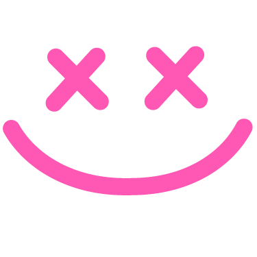
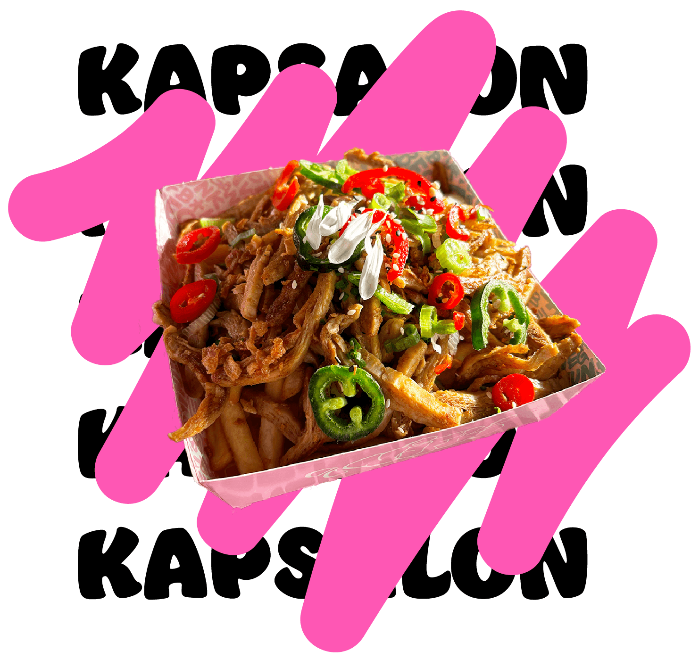
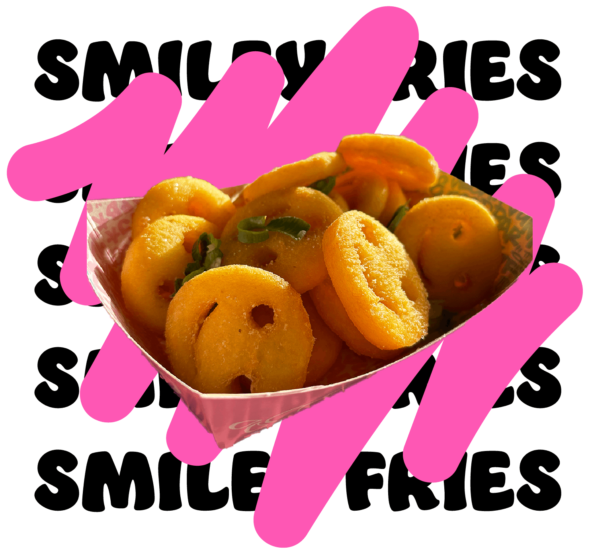
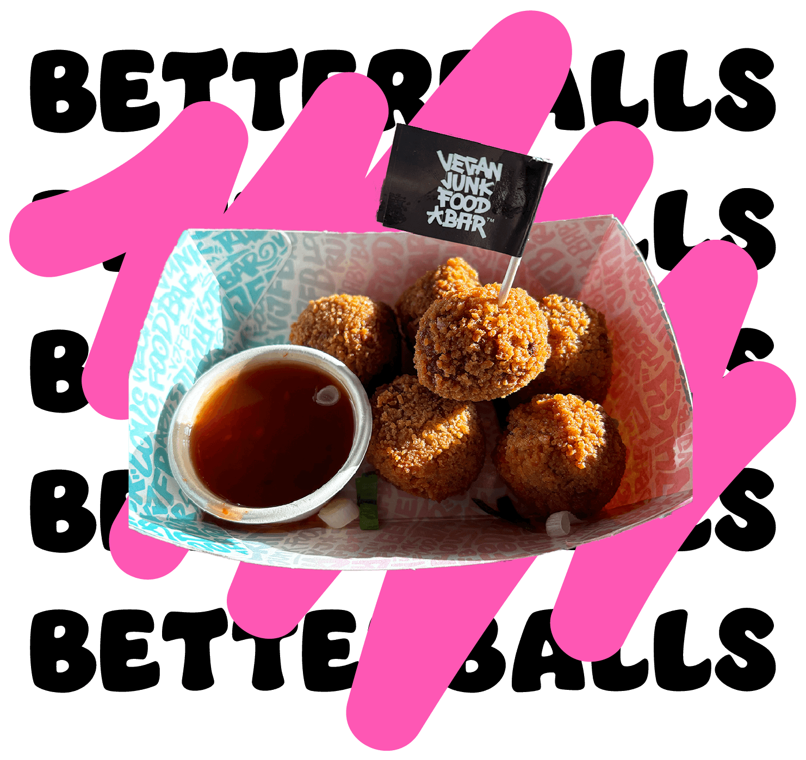

Wat zijn de beste gerechten van de Vegan Junk Food Bar?
-

1. Kapsalon
Een grote bak gevuld met VJFB's eigen shawarma, frietjes en cheez, versierd met jalapeños, red chili's en bloemblaadjes. Deze kleurrijke variant van de bekende kapsalon is een absolute aanrader!
-

2. Smiley fries
Deze vrolijke frietjes zijn een echte must! Hard van buiten en wat zachter van binnen, met een licht gekruide smaak. Heerlijk als gerechtje erbij!
-

3. Betterballs
Een goed alternatief voor bitterballen. De betterballs zijn gevuld met een Thaise saté en worden geserveerd met een sweet chili saus. Heerlijk voor tijdens een borrel!
Kijk wat bij jou past!